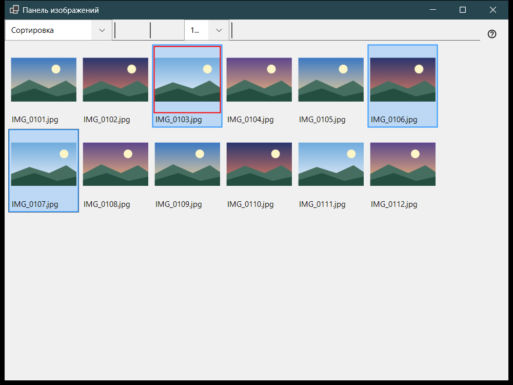
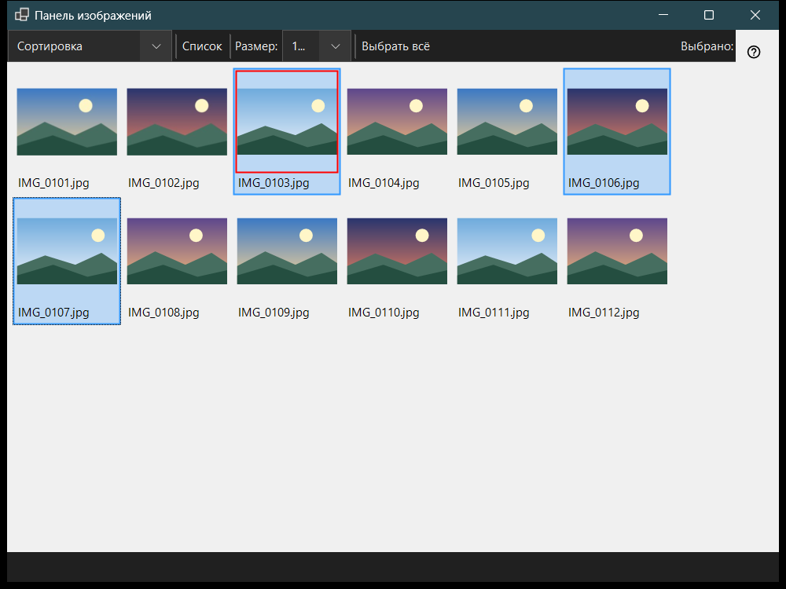

Панель изображений
Назначение
Панель изображений открывается по F3 из просмотрщика и работает в двух режимах, которые выбираются в списке «Режим панели»: Сортировка - сетка миниатюр текущей папки, и Файловый менеджер - обзор мест и папок с командами для файлов. Просмотр файлов, выделение и закрытие панели не меняют того, что показывает главное окно.


Порядок действий
- Нажмите F3 в просмотрщике.
- Выберите режим в списке «Режим панели».
- Выделите файлы: щелчок, Shift+щелчок для диапазона, Ctrl+щелчок для одного файла или рамка перетаскиванием.
- В режиме сортировки нажмите 0-9, чтобы перенести выделенное в папку получателя, или Shift с цифрой верхнего ряда, чтобы скопировать; Ctrl+Z отменяет последнюю операцию.
- Дважды щёлкните файл или нажмите Enter, чтобы открыть его в главном окне.
- Esc отменяет текущую операцию, повторное Esc закрывает панель.
Элементы окна
Режим панели
«Режим панели» переключает Сортировка и Файловый менеджер. Режим сортировки показывает миниатюры текущей папки для быстрого переноса и копирования; файловый менеджер открывает любую папку и даёт команды для файлов.
Размер, вид и выделение
Ползунок (Размер:) задаёт размер миниатюр, кнопки «Плитки» и «Список» переключают вид (Ctrl+L), а счётчик выделения показывает, сколько файлов выделено из общего числа.
Выделение и сортировка
Щелчок выделяет файл, Shift+щелчок - диапазон, Ctrl+щелчок переключает один файл, а перетаскивание рисует рамку выделения. Ctrl+A выделяет всё, Ctrl+Shift+A снимает выделение, Ctrl+I обращает его, пробел отмечает файл, а стрелки, Home, End, PgUp и PgDn перемещают по списку. Цифры 0-9 переносят выделенное в папку получателя этой клавиши, Shift с цифрой верхнего ряда копирует, Del удаляет, Ctrl+Z отменяет последнюю операцию.
Фильтр и скрытые файлы
Фильтр содержимого выбирает Медиафайлы, Медиа и документы или Все файлы, а «Скрытые» показывает или прячет скрытые файлы. «Настройки..» открывает окно настроек на странице Файловый менеджер, где задаются режим отображения, фильтр, места и запоминание сортировки.
Команды с файлами
Ctrl+C, Ctrl+X и Ctrl+V копируют, вырезают и вставляют, F2 переименовывает, Ctrl+Shift+N создаёт папку, Del и Shift+Del удаляют выделенное, а Alt+Enter показывает свойства. Копирование и перенос между ресурсами идут через этот компьютер.
Создать ZIP
«Создать ZIP» упаковывает все выделенные папки и файлы в один архив. Удаление исходных файлов по умолчанию выключено и разрешается только после проверки и публикации архива.
Распаковать здесь
«Распаковать здесь» работает с одним выбранным архивом: папки и обычные файлы сохраняются, исходный архив остаётся на месте, а распакованные программы не запускаются. Esc отменяет операцию.